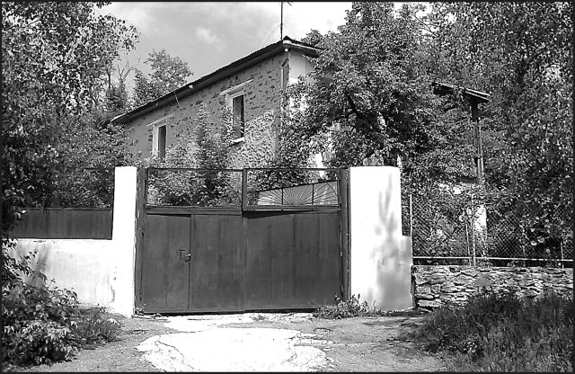

Страницы авторов "Тёмного леса"
Пишите нам! temnyjles@narod.ru
На старинной кисловодской улице, носящей имя Клары Цеткин, находятся две усадьбы, одна против другой. Усадьба на нечетной стороне (N17) довольно обширна и состоит из нескольких домов, флигелей и хозяйственных построек. Усадьба на четной стороне улицы (N20) состоит только из одного каменного двухэтажного дома с деревянной лоджией, находящегося в глубине тенистого сада.
Я, проходя неоднократно мимо этих усадеб, часто обращал на них внимание, но не знал ничего об их истории. Однажды мне довелось познакомиться с замечательным врачом-кардиологом, бывшим преподавателем медучилища, автором нескольких учебных пособий по внутренним болезням для студентов медучилищ (в том числе слепых и слабовидящих) Лилией Семеновной Савадовой. Оказалось, что бывшими владельцами этих двух кисловодских усадеб были ее предки. Лилия Семеновна рассказала мне много интересного о них.
Владельцем усадьбы по ул. К. Цеткин, 17 был дед Лилии Семеновны Савадовой с материнской стороны - Хосров (Константин) Багдасаров. Он родился в 1862 г. в селе Норашенк Джебраильского уезда Елизаветпольской губернии (теперь южная часть Нагорного Карабаха) в семье крестьянина. В 1890-х гг. он приехал в Кисловодск и стал работать каменщиком на стройках. Надо сказать, что армянские каменщики очень высоко ценились в Кисловодске, как настоящие мастера своего дела. Их труд был всегда востребован. Но вернемся к Хосрову Багдасарову. В 1895 г. он уже участвовал в строительстве Курзала Владикавказской железной дороги. В 1890-х гг. купил участок земли между Российской и Петрушевской улицами (теперь ул. Желябова и К. Цеткин), построил дома, в которых жила его большая семья. От первого брака у него было пятеро детей, а от второго - трое. Через некоторое время Хосров стал десятником у талантливого кисловодского архитектора Э.Б. Ходжаева, и тогда завязались добрые отношения между двумя семьями. Особенно близко дружили дочь Багдасарова от первого брака Елена Хосровна и дочь Ходжаева Елизавета Эммануиловна. Хосров Багдасаров участвовал во всех строительствах, производившихся по проектам Ходжаева, а после отъезда архитектора в Москву в 1932 г. - ушел на пенсию. Доживал свой век он в одном из своих флигелей, так как почти что всю его усадьбу национализировали. До самой смерти сохранял необыкновенную бодрость и будучи 90-летним стариком еще ходил в парк играть в шахматы. Умер Хосров Багдасаров 2 января 1955 г.
Владельцами усадьбы на улице К. Цеткин, 20 были отец и дед Лилии Семеновны. История Савадовых не менее интересна. Происходили они из того же села Норашенк. Дед Лилии Семеновны Джавад Бабаевич жил со своими братьями Арзуманом, Амбарцумом и Каспаром. В Норашенке он женился и родились у него пять дочерей, а также сын Семен (1895 г.). Когда последний окончил реальное училище, семья переехала в станицу Кисловодскую (в 1910-х гг.). Джавад Бабаевич вместе с сыном стал работать строителем у Ходжаева, где в то время уже работал Хосров Багдасаров. Жили Савадовы тогда в наспех сооруженной землянке недалеко от речки Белой. Казаки уважительно относились к ним, поскольку Савадовы строили дома и для некоторых станичников. Только в 1920 г. Джавад Бабаевич купил часть участка у профессора С.М. Полонского, который из-за внезапно возникших материальных трудностей не смог тогда приступить к строительству своего дома. На участке, расположенном на склоне горы Согласия, Савадовы при помощи Хосрова Багдасарова возвели двухэтажный каменный дом с двумя деревянными лоджиями (одну из них позднее застроили) и деревянным балконом, который впоследствии был снесен. В том же 1920 г. Семен Джавадович Савадов женился на Елене Хосровне Багдасаровой, которой в то время было только 16 лет.
Закончилась гражданская война. Семен Джавадович принял участие в восстановлении подкумского железнодорожного моста. Постепенно наладился быт семьи. У молодых супругов родились трое сыновей - Иван, Михаил и Николай и две дочери - Лилия и Лариса.
Дети росли в высококультурной среде во многом благодаря замечательным соседям. С запада к дому Савадовых примыкал участок с двумя дачами (ул. К. Цеткин, 22), которые принадлежали видному юристу Петру Федоровичу Попову. Одну из его дач (каменную с эркером), стоявшую на холме, национализировали в начале 1930-х гг. , а вторую, построенную в 1926 г. по проекту архитектора М.И. Мержанова ему посоветовали продать. Покупателем стал инженер-нефтяник, ректор Бакинского политехнического института Митрофан Митрофанович Скворцов. Он был владельцем этой дачи до самой своей смерти в конце 1950-х гг. после этого дача перешла к его сыновьям, которые также были инженерами. В 1970-х гг. Владимир Митрофанович Скворцов продал дачу.
С востока к усадьбе Савадовых примыкала дача профессора-кардиолога Семена Марковича Полонского (ул. К. Цеткин, 18). Врач этот приехал в Кисловодск еще в 1900-х гг. Сначала у него был электролечебный кабинет в гостинице "Гранд-Отель", а в 1916 г. в отеле "Центр" Кекишевой уже функционировал радиолечебный кабинет доктора Полонского (лечение радиоактивными веществами - прим. авт.). Семен Маркович стал основателем и первым главврачом кисловодской клиники им. В.И. Ленина. Дача его, построенная в 1926 г. по проекту архитектора М. Мержанова является интересным памятником конструктивизма. Полонский умер в 1938 г. , а его жену Маргариту Осиповну в 1942 г. расстреляли фашисты. С конца 1930-х гг. верхний этаж дачи снимал врач Зиалов, который умер в годы войны.
За участком Полонского следовал участок архитектора Мирона Ивановича Мержанова и его жены Елизаветы Эммануиловны (в девичестве - Ходжаевой). В 1927 г. они построили на нем дачу в стиле конструктивизма (ул. К. Цеткин, 16). Здесь бывали М. Волошин и академик архитектуры А. Щусев. Надо сказать, что с Мержановым, приехавшим в Кисловодск в 1923 г. , Савадовы особенно дружили. Лилия Семеновна и сейчас продолжает дружить с потомками архитектора. О добрых отношениях двух семей свидетельствовало и то, что Семен Джавадович стал крестным отцом сына Мирона Ивановича Мержанова - Бориса, а крестным отцом Ларисы Семеновны Савадовой стал тесть Мержанова - Э.Б. Ходжаев.
За домом Мержановых находился небольшой участок с особнячком, выстроенным в 1928 г. и принадлежавшим первоначально врачу-педиатру, профессору Бакинского медицинского института Евсею Яковлевичу Гиндесу (ул. К. Цеткин, 14). В 1946 г. Гиндес продал дачу Гукасу Николаевичу Тер-Акопову. Он был хорошим хирургом, преподавателем Кисловодского медучилища и главврачом платной поликлиники. Его жена Маргарита Аркадьевна была педиатром и тоже преподавала в медучилище. Вот в таком замечательном окружении жила семья Савадовых. А ведь в 1935 году всех этих людей (в том числе и семью Савадовых) хотели лишить незаконным путем недвижимого имущества. И лишь вовремя написанная в высокие инстанции жалоба спасла их от такой участи. Но вернемся все же к Семену Джавадовичу.
В 1932 г. он впервые принял участие в строительстве не в качестве рядового строителя, а как начальник мастеров каменнооблицовочных работ (строилось здание санатория НКВД - ныне "Кисловодск" - прим. авт.). С тех пор Савадов постоянно занимал эту должность.
В 1933 г. умер его отец - человек, научивший своего единственного сына ремеслу каменщика.
В 1930-х гг. Семен Джавадович работал на строительстве здания училища НКВД в городе Орджоникидзе, здания управление госбезопасности в Ставрополе, здания Хозуправления НКВД на Памире в Таджикистане. В 1938 г. руководил облицовочными работами при строительстве санатория "Красные Камни", который проектировал М.И. Мержанов (тогда дом отдыха ВЦИК и Совнаркома СССР - прим. авт.), а в 1952 г. - на строительстве санатория "Горный Воздух" (ныне "Эльбрус"). В 1954 г. Савадов начал работу над облицовкой санатория МВД в Железноводске, но ему не удалось ее закончить. 9 января 1956 г. Семен Джавадович умер.
Дети не пошли по стопам отца. Никто из них не стал строителем. Иван Семенович, заслуженный мастер спорта СССР, участник Великой Отечественной войны (как и все его братья) стал летчиком-испытателем. Михаил Семенович также стал летчиком. Лилия Семеновна - высококвалифицированный кардиолог (имеет награды Министерства здравоохранения), а Лариса Семеновна - стоматолог. Зато пошли по стопам дедов племянники Лилии Семеновны - Сергей и Георгий Маиловы. Сергей Арменакович архитектор и художник, строит в Москве, но ему также принадлежат проекты вычислительного центра и нового корпуса клиники им. В.И. Ленина в Кисловодске (а также проект особняка скульптора Г.В. Курегяна на ул. Тельмана в Кисловодске - прим. авт.). Георгий Арменакович строит, как и его брат, в Москве.
Кто-то скажет, что история Савадовых и Багдасаровых не настолько интересна, чтобы писать о них. Но история именно таких семей дает нам, как нельзя лучше, понять прошлое нашего города.
|  | Дом Савадовых. Фото автора. |
Вячеслав Яновский. Неакадемические сочинения